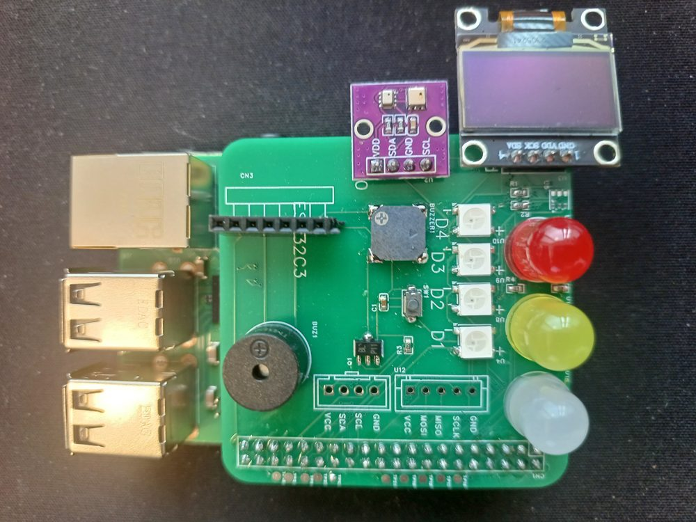

멈춘 뒤에야 알고, 원인 찾느라 반나절
돌아다니며 확인·기록 — 누락과 지연
수천만원 시스템, 중소기업엔 부담
현장 직원은 시도조차 못 함
비싼 시스템을 사드리는 게 아니라, 직원이 직접 만들 수 있게 가르칩니다. 필요한 건 딱 세 가지입니다.
손바닥만 한 진짜 컴퓨터
센서·LED·무선 일체 (자체 제작)
막히면 스스로 물어 해결

"나도 만들 수 있다"
현업 노트 + 실습 키트를 그대로 가져감
AI로 스스로 계속 배우는 힘
단순 체험이 아닙니다. 배운 것을 자기 공장·업무에 기록하고 다시 쓰는 방법까지 함께 익혀, 교육이 끝난 뒤에도 계속 이어집니다.
용인에서 실제 운영 중 — 미래창의 아카데미 과정으로 제조기업 임직원·예비창업자 16명이 수강, 매주 직접 만들며 진행되었습니다. 탁상 계획이 아니라 현장에서 검증된 커리큘럼입니다.
광주는 제조 기반이 탄탄한 도시입니다. 기존 체험형 교육이 '만들어 보기(craft)'에 머물렀다면, 본 과정은 전자·IoT·AI를 직접 다루는 실습으로 지역 제조 인력의 디지털 전환 역량을 키웁니다. UTTEC 협력사 Ponet의 광주 거점과 연계해 지역 네트워크 활용도 가능합니다.
교재·커리큘럼·강사·실습 키트는 이미 준비되어 있습니다. 위 몇 가지만 정해지면 즉시 개설할 수 있습니다.